L’île Mémoire est située dans la baie de Dakar approximativement
à 3 km des côtes. Il y est recensé plus de 1800 habitants.
Découverte en 1444 par un navigateur portugais puis reprise
par les hollandais en 1588, les anglais en 1804 , elle est
finalement rendue à la France en 1817.
L’île de Palma (portugaise) est tristement célèbre à cause de
la traite des esclaves qui y a perduré pendant plus de 3 siècles.
En effet, il s’agit d’une place forte pour le déportage vers les
Amériques. On estime à plusieurs millions les esclaves passés par
l’ancienne demeure d’Anna Colas Pépin, nièce de la Signare Anna
Pépin qui avait développé le commerce de l’Arachide sur l’île.
Contrairement à ce que l’on peut penser, les principaux négriers
de l’époque étaient Sénégalais comme les Rois Wolof du Cayor et
les Rois Toucouleurs. Néanmoins, le commerce entier était
contrôlé par les rois de France et d’Angleterre. Dans ce
commerce, on retrouvait également des peaux, des arachides,
de l’or, des épices pauvres.
Après avoir été une place forte de l’esclavagisme de la côte ouest
Africaine, Gorée devient exportateur d’arachide et autres produits.
Avec la fondation de la ville de Dakar en 1857, à la demande des
descendants Signares (les métisses), l’île va perdre de sa valeur.
L’île de Gorée et la ville de Saint-Louis ont par ailleurs été nommées,
en 1872, communes de France par l’administration française. Jusqu’en 1887,
Dakar faisait partie de la commune de Gorée.
En observant les inégalités démographiques qui se creusent entre Dakar et
Gorée, les deux communes finissent par fusionner et, la commune de Gorée
disparaît, absorbée par la capitale.
En 1996, Dakar, trop étendue, décide de se diviser en 19 communes d’arrondissement.
Grâce à cette décision et aux pouvoirs conférés aux communes, Gorée récupère des
bâtiments détenus par la capitale depuis près de cent ans. La politique de l’île
change totalement et se modernise. Elle reçoit, par exemple, un dispensaire de l’Ordre
Souverain de Malte. Elle effectue de nombreux jumelages avec Drancy (France), Sainte-Anne
(Martinique), Lamantin (Guadeloupe), Robben Island (Afrique du Sud).
Les différents sites
Le musée de la mer
Fondé en 1959 par l’institut français d’Afrique noire. Il est le seul
musée de ce type sur la côte occidentale d’Afrique.
L’île de Gorée a vécu pendant des années de l’industrie de la pêche et ce musée permet de
comprendre l’environnement lié à cette activité. En effet, des objets dédiés à la pêche ont
été récupérés ainsi que des poissons placés dans des bocaux de formol.
La visite est expliquée en français, anglais et wolof. Le musée traite également de l’histoire
de la mer en passant par les monnaies d’échanges qui ont traversé le temps, les outils et des
maquettes d’habitats. 750 espèces de poissons et 700 espèces de mollusques sont présentés et
rendent ce site unique au Sénégal. >Le musée de la mer est ouvert du mardi au dimanche de 10h à 17h30. Le prix est de 500 Francs
CFA (0.76€) pour les adultes et 100 francs CFA pour les enfants (0.15€)
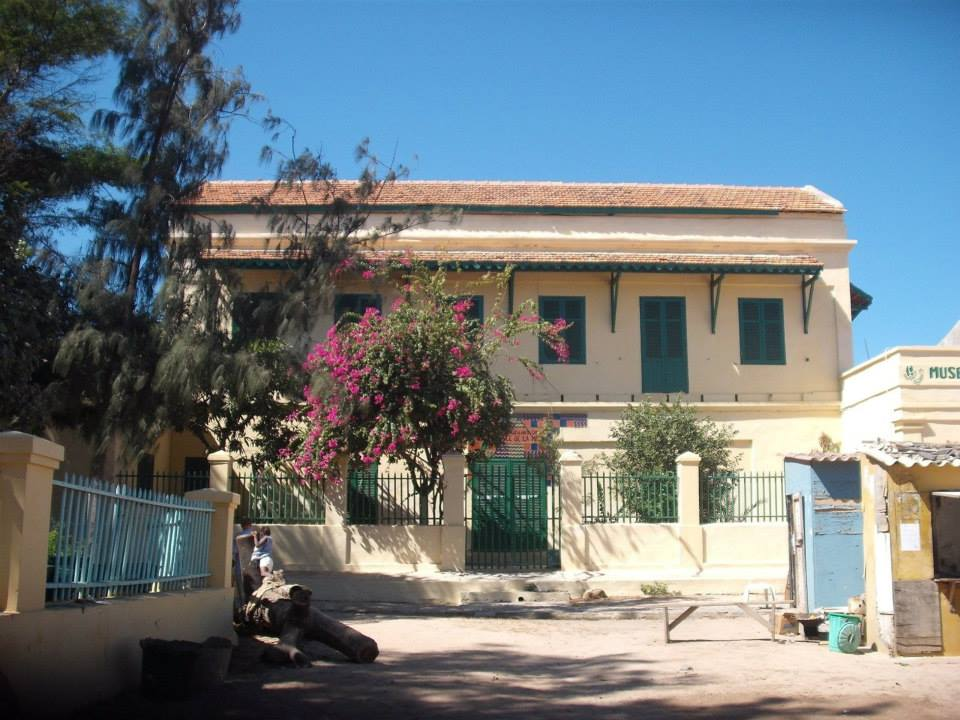
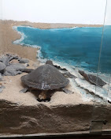
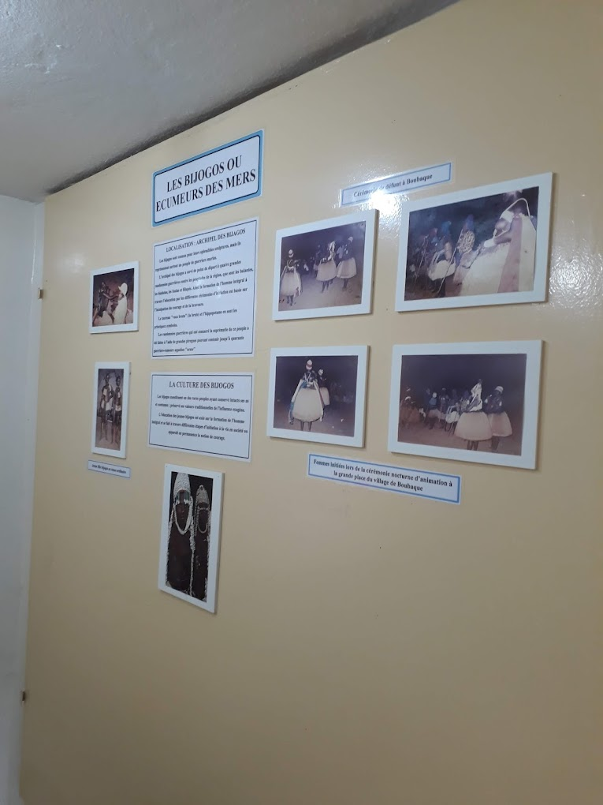
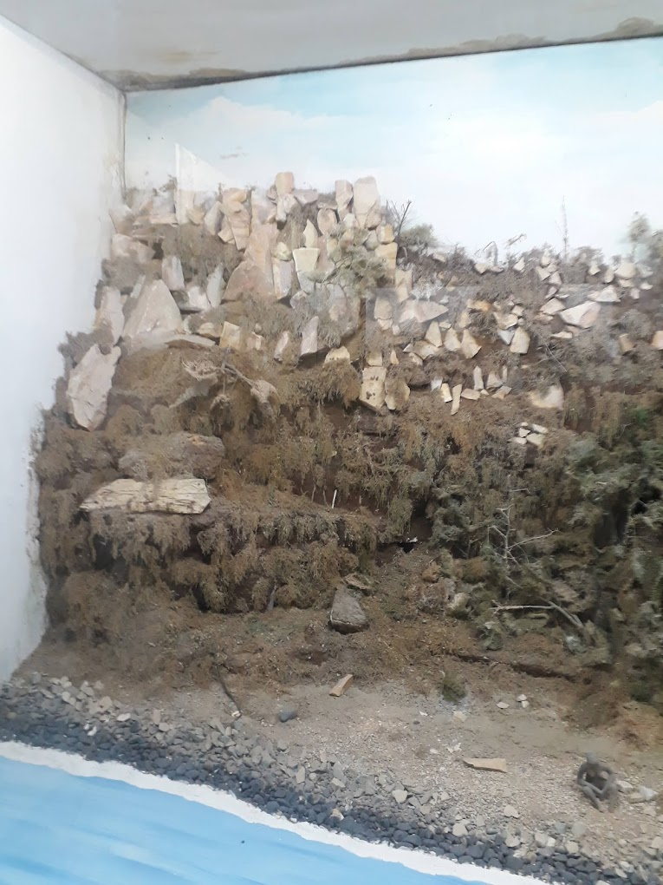
Le Musée des esclaves
Fondée en 1776, c’est le monument le plus célèbre de l’île non pas
historiquement mais en terme de symbole de la traite négrière. Il s’agirait de la dernière maison
d’esclaves construite par les français, la première a été érigée par les portugais. Dans cette demeure
que le conservateur nous fait visiter, nous retrouvons plusieurs récits historiques.
Au rez-de-chaussée, les cellules sont séparées en plusieurs catégories. Les hommes, les femmes, les enfants,
la chambre de pesage, … Entre 15 et 20 personnes étaient entassés dans des pièces de 2.60 m sur 2.60 m.
À droite du porche, nous trouvons le bureau du maître. Entre les deux escaliers qui font faces lorsque l’on
rentre dans les lieux, on aperçoit une ouverture lumineuse.
Il s’agit de la porte du “voyage sans retour” car ces hommes qui partaient pour une vie de souffrance ne
reverraient jamais leur terre d’origine.
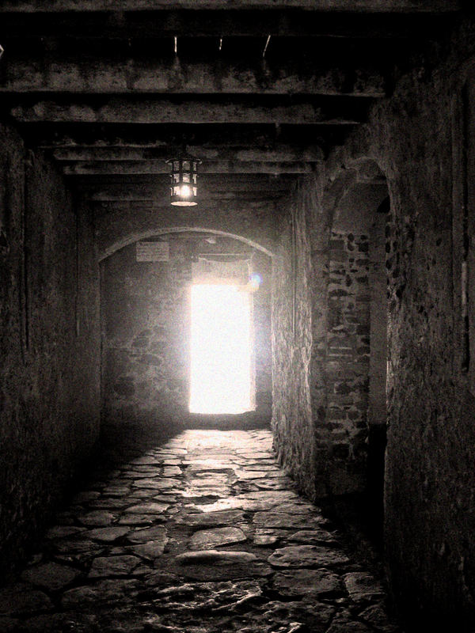
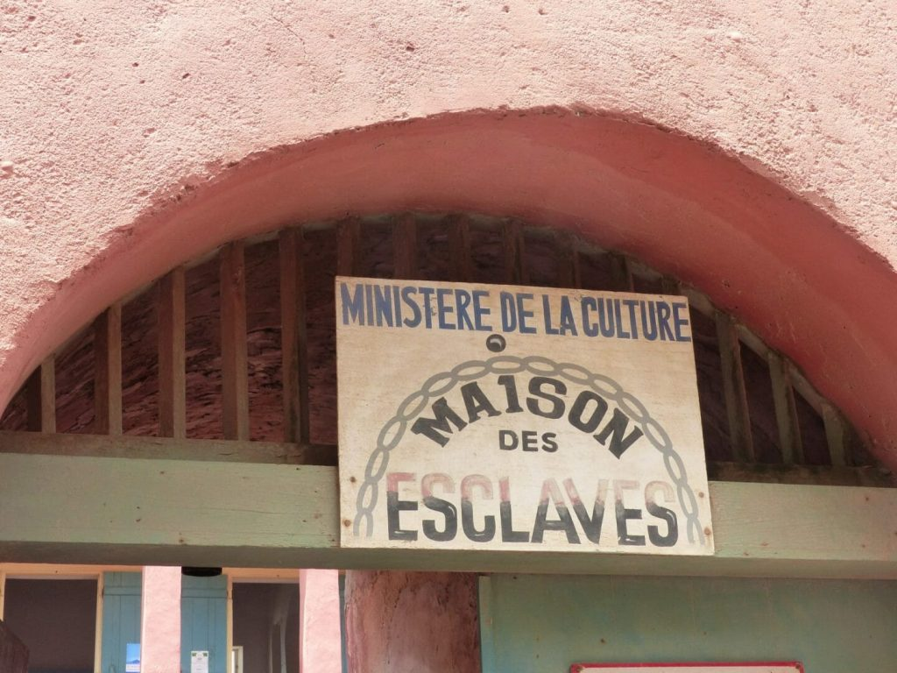
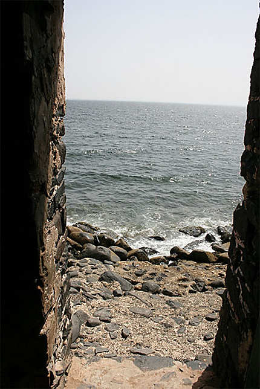
Le mémorial de Castel
Il constituait une position stratégique et offre aujourd’hui un large panorama
sur le continent.
Sur le plateau se dresse un modèle réduit du Mémorial de Gorée. Le bâtiment d’accueil est une réplique de
la Maison des esclaves de Gorée et le visiteur est conduit par la « porte du voyage sans retour » sur une
jetée formée par un navire prêt à appareiller, aux cales chargées d’esclaves enchaînés.
Ce site n’a jamais été terminé et a été sujet à débat au fil des années et des différents présidents.
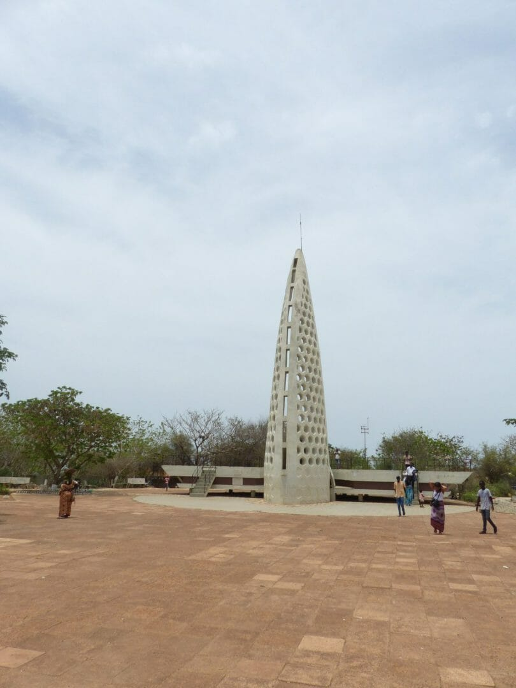
L’église Saint-Charles Borromée
Située au centre de l’île, sur la rue du Chevalier de Boufflers, l’église Saint-Charles Borromée est l’un des deux
lieux catholiques du site. Elle est dédiée à Charles Borromée, l’archevêque réformateur de Milan et cardinal italien.
Brûlée par les anglais en 1799, elle est restaurée en 1830 en étant financée par Signares de Gorée (riches métisses).
Pendant cette longue période, les catholiques de l’île sont privés de lieu de culte et c’est la maison de Anna Colas
Pépin qui servira les fidèles jusqu’à la reconstruction de l’église Saint-Charles Borromée.
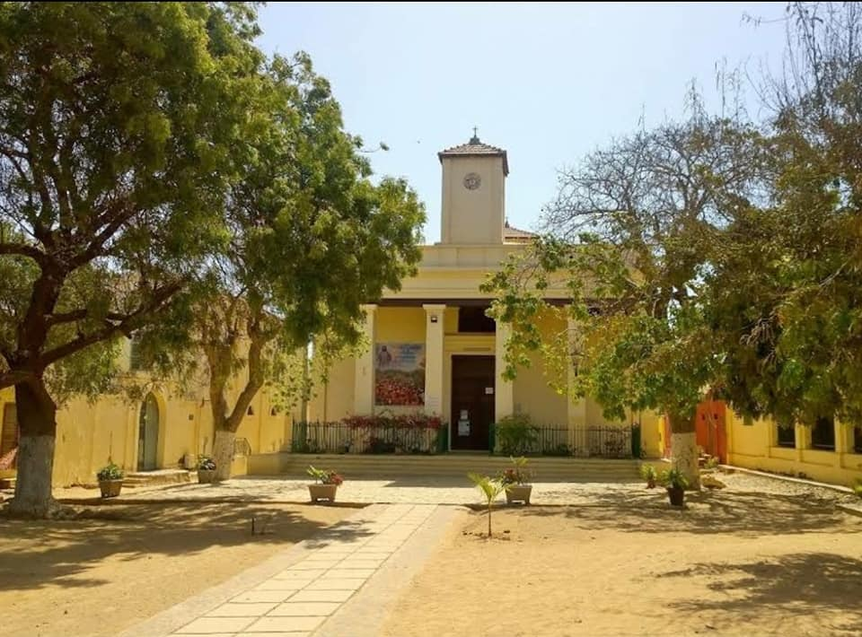
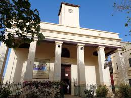
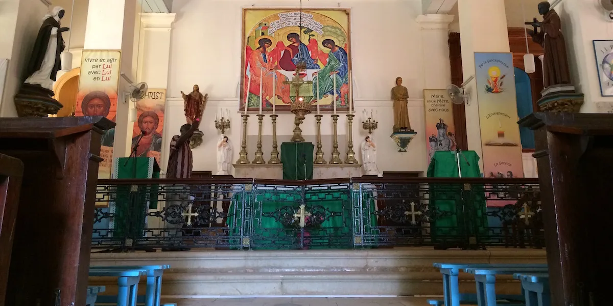
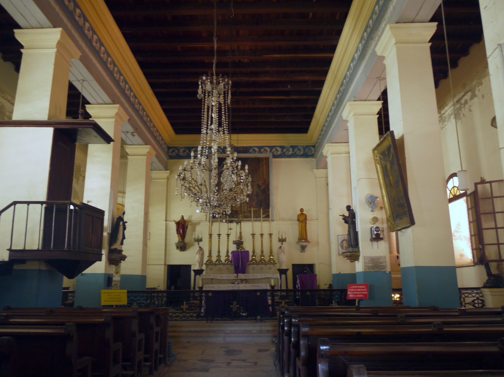
Musée historique de Gorée
Dans le Fort d’Estrées, une citadelle construite par les français entre 1852 et 1856, se trouve le Musée Historique
de Gorée. Celui-ci retrace l’histoire générale du pays, de ses origines à l’indépendance et particulièrement à l’histoire de Gorée.
Le commerce des esclaves y tient une grande place. Nous retrouvons les différents types de trafic esclavagistes, arabe, européen, chinois, …
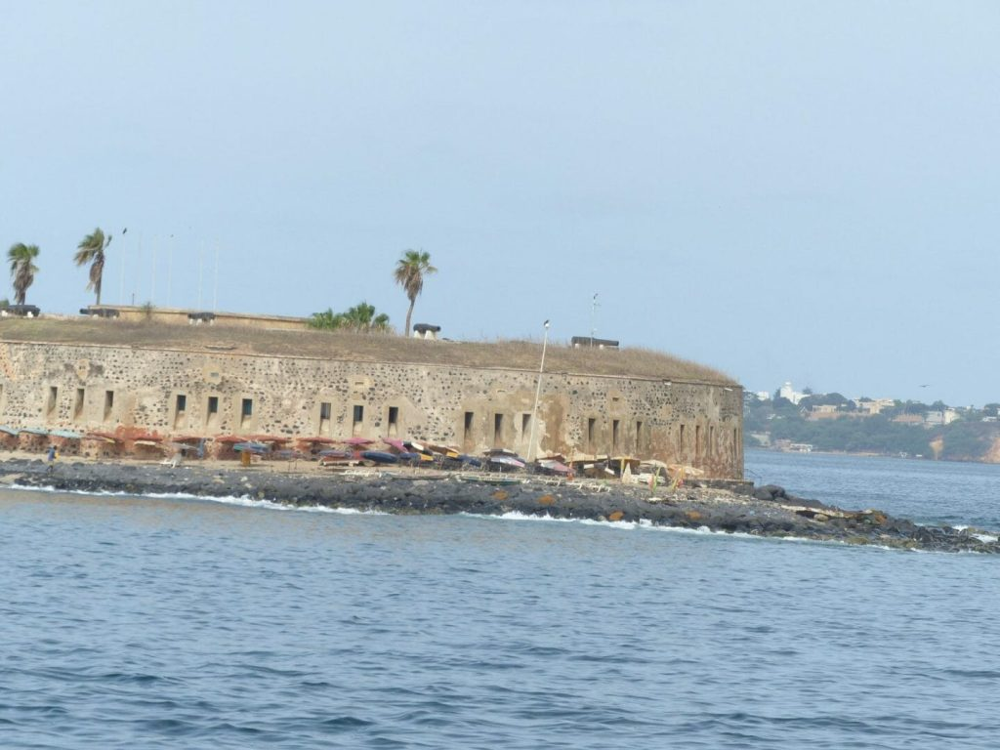
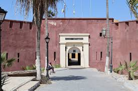
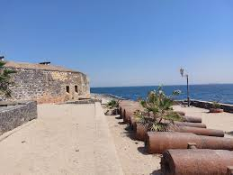
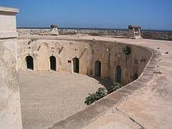
L’esprit colonial
Outre la maison des esclaves dont le nom est tristement célèbre, le reste des bâtisses de l’île n’est pas concerné par ce pan de l’histoire.
Comment ne pas tomber en admiration devant les maisons colorées typiques construites au 17ème siècle qui sont caractérisées par des rez-de-chaussée surélevés. Les voitures,
interdites sur l’île, laisse un sentiment d’apaisement qui permet de profiter sereinement de cette visite.
 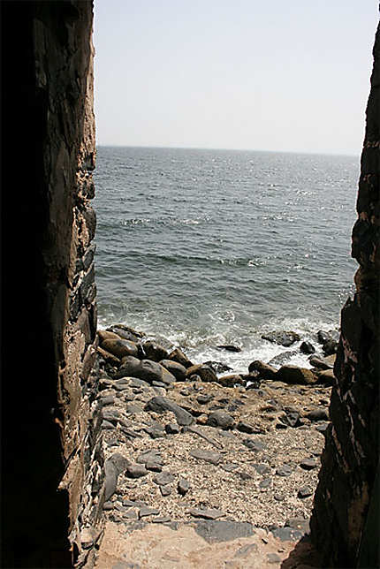
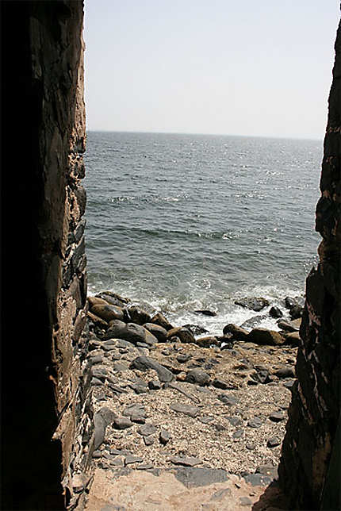